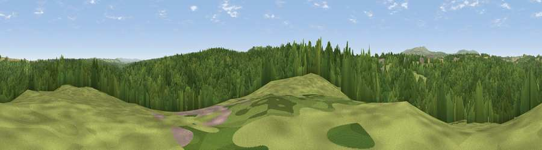

Viewpoint near Bayton
#37472 in England · top 88% of its area beats it · near BaytonThe view, rendered

A 360° render of this exact spot computed from the terrain model, tree cover and land cover — summer colours, afternoon light, calibrated against photographs of famous viewpoints. Real trees, hedges and buildings will differ in detail.
The panorama
Grey silhouette: terrain skyline in each direction (720 bearings, Earth curvature and refraction included). Dashed green: skyline with trees (+15 m) and buildings (+8 m) as obstacles. Blue strip: how far the ground is visible on each bearing.
Where the view opens
Wedge length = distance to the farthest visible ground on that bearing (vegetation-aware). Rings at 10, 25 and 50 km.
What fills the view
71% woodland · 25% grassland · 4% cropland ·
Angular shares of the visible panorama (visual magnitude), not map area. Landscape diversity 0.33 (0–1 Shannon).
Key numbers
More beautiful places nearby
The staircase of upgrades: each row has a higher view potential than everything closer. Driving times are estimates from straight-line distance, calibrated against real road routing — check an actual route before setting out.
| Place | Direction | Drive | Score |
|---|---|---|---|
| Viewpoint near Cleobury Mortimer | WSW · 2 km | ~5 min | 37.3 |
| Viewpoint near Bayton | S · 3 km | ~6 min | 67.5 |
| Knowle Hill | NNW · 6 km | ~13 min | 75.5 |
| Magpie Hill | W · 9 km | ~18 min | 75.7 |
| Abberley Hill | SSE · 10 km | ~19 min | 80.4 |
| Viewpoint near Cleehill | W · 11 km | ~22 min | 82.3 |
| Titterstone Clee | W · 12 km | ~22 min | 83.8 |
| North Hill | SSE · 30 km | ~47 min | 86.8 |
52.37832, -2.43295 · source: screening · position refined by local search. Computed location — check access rights before visiting.